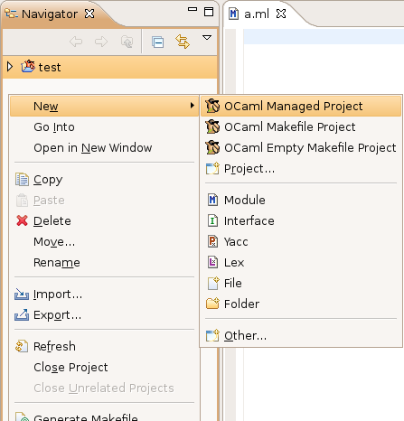
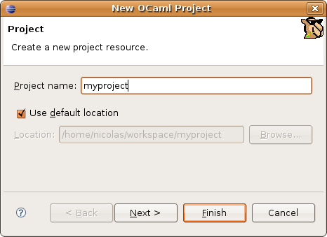

To create a new O'Caml project, right click (or Ctrl + Click on Mac) on empty space in the navigator view. Alternatively, you can also click on File > New.
If you are in the O'Caml perspective (see Opening the O'Caml perspective), you should see the following menu:

From this menu, you can choose between three different kinds of O'Caml projects:
Once you have clicked on one of the three project options, you get the following dialog box:

Type the name you want to give to your project (avoid spaces and special characters), and click Finish.